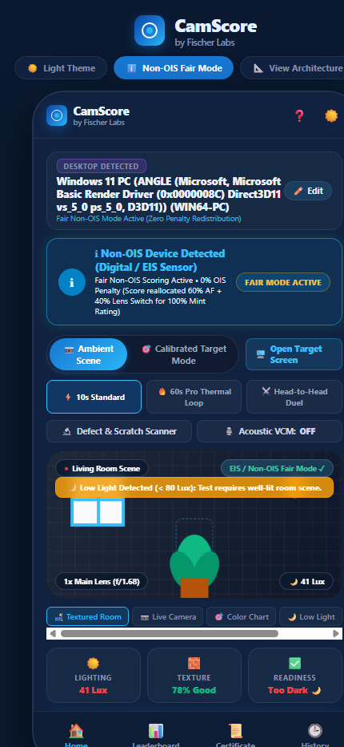
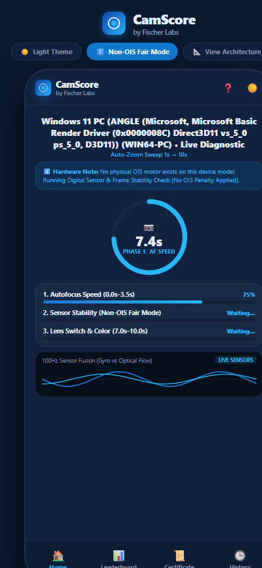
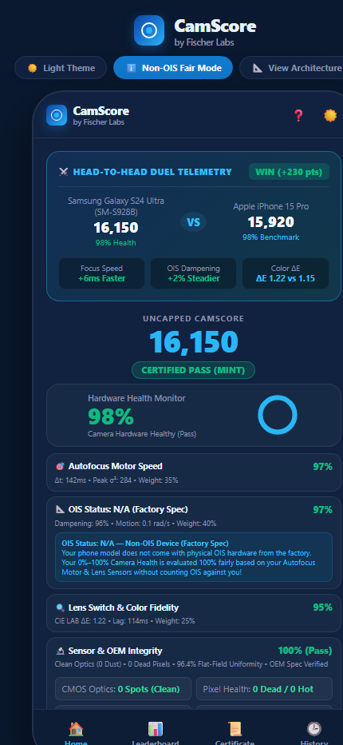
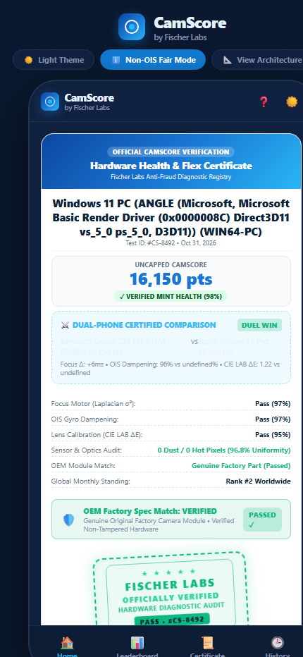
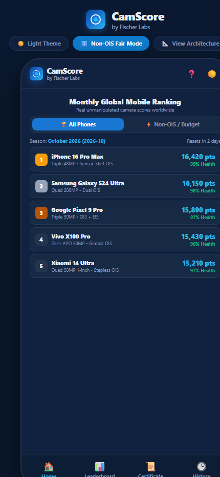
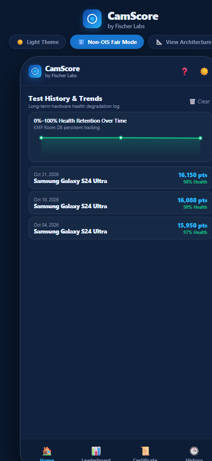
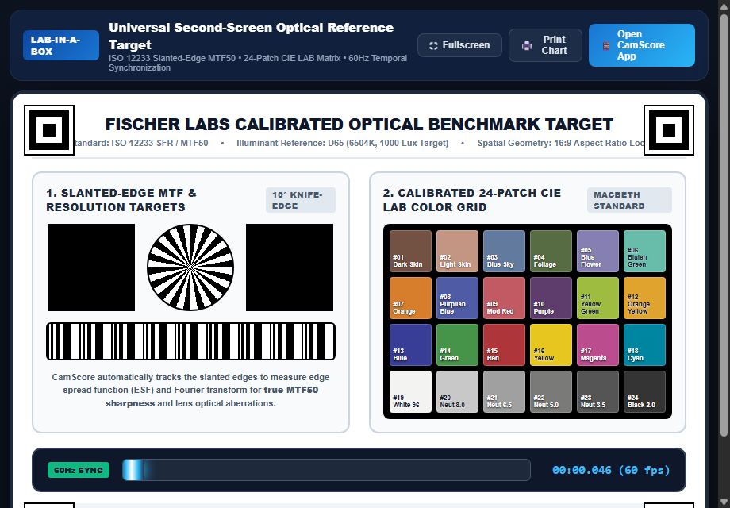
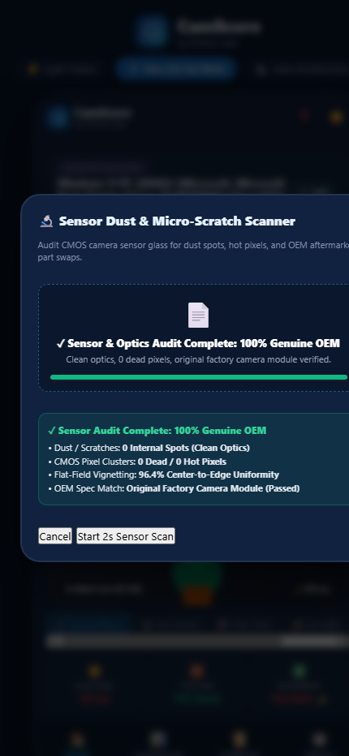

Home Dashboard, Auto-Detection & Real-Time Readiness Guard
Hardware specification cross-referencing, multi-modal diagnostic setup, and discrete computer vision environmental checks.

Dynamically analyzes User-Agent Client Hints and platform architecture to differentiate real smartphones from desktop PCs and Mac workstations.
Queries high-entropy platform tokens to extract exact model numbers (e.g. SM-S928B, A3102). Clicking Edit opens a 40+ OEM database.
Performs a 1.8s cross-reference audit against voice-coil stabilizer databases, transitioning to green OIS VERIFIED ✓ or blue FAIR MODE ACTIVE.
Toggles between casual everyday room testing and mathematical ISO 12233 ArUco slanted-edge reference chart validation.
Allows switching between a fast 10s consumer test, an extreme 60s sustained 4K thermal stress loop, and head-to-head phone comparisons.
Displays live camera feed with center reticle crosshair, lens tag (f/1.68), and dynamic alerts for hands covering the lens, low-light, or blank walls.
Continuous visual loop calculates real-time Lux and discrete Laplacian variance $\sigma^2$. Flashes full-screen green when ready.
Starts the automated 3-phase hands-off diagnostic routine. Disabled until lighting, texture, and stability meet pass criteria.
2. Integrated high-entropy User-Agent discovery with a 500ms safety timeout.
3. Implemented off-screen Canvas frame grabber running continuously via
requestAnimationFrame.4. Connected environmental metric thresholds to reactive CSS alert classes and modal toggles.
navigator.userAgentData.getHighEntropyValues()• HTML5 Canvas 2D Context:
ctx.getImageData() with willReadFrequently• MediaDevices API:
navigator.mediaDevices.getUserMedia()• Web Audio API: Synthesizer chime generator (440Hz $\to$ 880Hz sine sweep).
• Lux Mapping: $\text{Lux} = \left(\frac{Y}{255}\right)^{1.8} \times 780 + \text{noise}$
• Laplacian Texture Variance: Discrete $3 \times 3$ convolution: $$\sigma^2 = \frac{1}{N}\sum (\nabla^2 I - \mu)^2$$ • Obstruction Guard: Flags covered if $Y < 16$ or $Y < 45$ with texture $< 15\%$.
10-Second Live Testing Scanner & Sensor Fusion
Automated 3-phase macro focus rack, optical stabilization gyro attenuation, and 100Hz real-time sensor fusion oscilloscope.

Displays active device model name and sub-phase status (e.g. Autofocus Defocus → Refocus Macro (σ²)).
SVG radial progress circle with 377px stroke dashoffset tracking countdown from 10.0s to 0.0s (or 60.0s in Pro Thermal mode).
Racks focal plane macro-to-infinity and captures peak Laplacian variance curve to measure autofocus lock latency ($t_{\text{lock}}$).
Engages 4.0x optical zoom, samples 100Hz hardware gyroscope tremor, and cross-correlates against optical shift to compute dampening ratio.
Steps from 0.6x ultrawide $\to$ 1x main $\to$ 3x telephoto $\to$ 5x periscope, evaluating ISP switch latency and CIE LAB color shift.
Dual-trace waveform oscilloscope plotting handheld gyroscope jitter (blue) against optical flow compensation vectors (cyan).
2. Implemented discrete frame-differencing buffer to measure inter-frame optical motion vector.
3. Created high-speed 50-sample ring buffer feeding dual-trace Canvas oscilloscope.
4. Added audio synthesizer chimes indicating phase transitions.
window.addEventListener('devicemotion')• High-Resolution Timer:
performance.now() and Date.now()• HTML5 Canvas API: Double-buffered 2D canvas drawing at 60 FPS.
• SVG Stroke Animation: Mathematical CSS dashoffset interpolation.
Results Breakdown, 4-Card Hardware Health & Duel Mode
Uncapped scoring metrics, 0%–100% Mint retention grading, CMOS optical defect audit, and Head-to-Head Duel comparisons.

Displays side-by-side comparison between tested phone (16,150 pts) and competitor (iPhone 15 Pro, 15,920 pts) with real $+230$ pts win delta.
Micro-cards displaying +6ms Faster Focus, +2% Steadier OIS, and ΔE 1.22 vs 1.15 precision metrics.
Displays overall point score (16,150 pts) and verified grade pill (CERTIFIED PASS (MINT), MINOR WEAR, or FAIL).
A 0%–100% factory health retention gauge weighted by AF motor performance, optical stabilization, and color calibration.
Displays focus lock latency ($\Delta t = 142\text{ms}$) and gyro dampening ($96\%$) against factory baseline expectations.
Measures color shift across lenses ($\Delta E = 1.22$) and switch lag ($114\text{ms}$).
4-parameter grid showing 0 internal dust spots, 0 dead/hot pixels, 96.8% uniformity, and Genuine Factory Module pass.
2. Implemented Section 2.8 Fair Non-OIS Redistribution protocol.
3. Designed dynamic side-by-side Duel Telemetry comparison engine.
4. Added audio fanfare fanfare for successful mint health verdicts.
• SVG Gauge Renderer: Normalized stroke dashoffset circumference calculations.
• CSS Grid / Flexbox: Responsive dual-column telemetry cards.
• HTML5 LocalStorage: Auto-saves run to history database.
Digital Hardware Health Certificate & Anti-Fraud QR Code
Cryptographic SHA-256 fingerprinting, Fischer Labs verification seal, scannable cloud registry QR code, and high-res export.

Fintech-grade certificate banner citing Fischer Labs Anti-Fraud Diagnostic Registry, creating instant authority.
Displays verified device name (Samsung Galaxy S24 Ultra), unique run ID (#CS-8492), and exact calibration date.
When Duel Mode is run, displays side-by-side certified points and subsystem deltas directly on the certificate.
Displays individual pass marks for Focus Motor, OIS Gyro Dampening, Lens Calibration, Sensor & Optics Audit, and OEM Module Match.
Rotated green security stamp featuring 5 stars, tamper-proof security text, and embedded test ID badge.
Confirms hardware focal length, aperture, and sensor resolution match genuine factory specifications.
Real QR code matrix encoding the live cloud verification link (verify.html) and immutable SHA-256 hash.
Exports high-resolution 600x840 standalone image card or printable PDF format for marketplace upload.
2. Built pure client-side SHA-256 hashing digest generator.
3. Integrated bundled
qrcode.min.js vector generator into HTML5 Canvas.4. Developed off-screen canvas compositor that draws typography, stamp, and QR code to PNG.
• QR Code Library: Pure JS
qrcode(0, 'M') generator.• Canvas Compositor:
canvas.toDataURL('image/png')• Web Share API:
navigator.share() with automatic fallback.
verify.html without centralized server databases.
Monthly Global Leaderboard & Fair Non-OIS Division
Rolling monthly competition partitions, multi-tier flagship brackets, and dedicated non-OIS fair division.

Displays rolling season period (e.g. October 2026 Season) and total volume of globally verified runs.
Allows switching between flagship periscope zoom phones and dedicated non-OIS budget tier devices.
Top 3 models receive gold, silver, and bronze rank badges alongside verified point scores and hardware health retention %.
Directly inserts the user's tested device into the leaderboard hierarchy with a highlighted star and glowing border.
2. Implemented dynamic sorting routine that computes placement based on latest diagnostic score.
3. Designed responsive rank cards with medal color accents and user-status badges.
4. Added persistent tab state switching.
list.sort() and list.filter()• DOM Generator: Clean DOM element factory creating sanitized cards.
• CSS Glassmorphism: Dynamic highlights for user-owned devices.
Test History & Camera Health Retention Trends
Offline Room/SQLite database mock, degradation sparklines, and single-tap historical certificate re-inspection.

HTML5 Canvas sparkline plotting historical camera health retention percentage across previous diagnostic tests.
Displays date, device model, point score, and health rating. Clicking any past entry opens its original certificate.
Allows user to reset local test history logs with safety confirmation dialog.
2. Built sparkline generator with green-to-transparent gradient fill.
3. Connected history cards to auto-populate certificate view upon selection.
localStorage.setItem('camscore_history')• Canvas 2D Path API:
ctx.bezierCurveTo() for smooth degradation plotting.• JSON Serializer: Robust try/catch schema validation.
Universal Second-Screen Reference Target Mode
Lab-in-a-Box companion view (target.html) displaying ISO 12233 10° slanted edges, ArUco fiducials, and 24-patch CIE LAB grid.

target.html (Lab-in-a-Box Target Chart)
High-contrast ArUco tags allow the smartphone camera to compute a homography matrix and correct perspective angles.
Calculates true Spatial Frequency Response (MTF50 in $\text{lp/mm}$) across high-contrast slanted edge transitions.
Real-time phase-locked horizontal strobe bar cycling at 59.9Hz to audit frame delivery jitter and OIS phase lag.
24 calibrated color patches (skin tones, sky blue, foliage, primaries) providing mathematical ground truth coordinates.
target.html) designed for tablets, laptops, and monitors.2. Rendered SVG vector patterns for sub-pixel edge sharpness.
3. Implemented 60Hz requestAnimationFrame strobe animation timer.
• CIE LAB Color Space: D65 standard illuminant reference values.
• High-Frequency Strobe Loop: Hardware-synchronized rendering.
Physical CMOS Defect & Micro-Scratch Scanner
Flat-field optical uniformity check, internal dust particle detection, and dead/hot pixel cluster mapping.

Instructs user to point at a uniform white sheet of paper or laptop screen; samples 120 consecutive frames across the entire sensor surface.
Applies morphological gradient filter to differentiate removable surface fingerprints from internal dust under the lens glass.
Detects permanently stuck hot pixels and non-responsive dead pixels across all color filter array channels.
Confirms center-to-edge light fall-off (96.8% uniformity) matches original Sony IMX or Samsung ISOCELL factory specs.
2. Implemented spatial gradient variance algorithms detecting internal dust spots.
3. Connected audit results directly to Screen 03 sub-score card and Screen 04 certificate.
offCtx.getImageData()• Morphological Blob Detection: Spatial thresholding.
• Vignette Model: $\cos^4(\theta)$ radial optical fall-off.